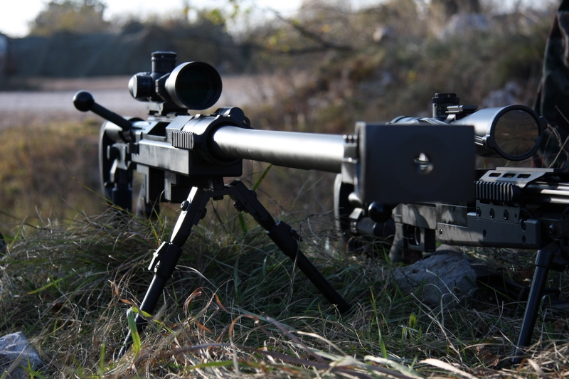

Osnovni podatki
Kaliber: 12,7 x 99 mm
Strelivo: 12,7 mm, ostrostrelno
Učinkovit domet: 2.200 m
Okvir: 7 nabojev
Dolžina: 1.439 mm
Masa: 15.300 g
Namen
Ostrostrelna puška je orožje ravni čete. Z novim kalibrom 8,6 mm zapolnjuje pomembno praznino med lahkim kalibrom 7,62 mm in težkim kalibrom 12,7 mm.
Delovanje
Konstrukcijsko gre za enostrelno repetirno orožje (princip obratnočepnega zaklepa). Kopito je preklopno in nastavljivo. Orožja SV so opremljena z optično namerilno napravo proizvajalca Schmidt & Bender in nočno optiko proizvajalca Simrad.